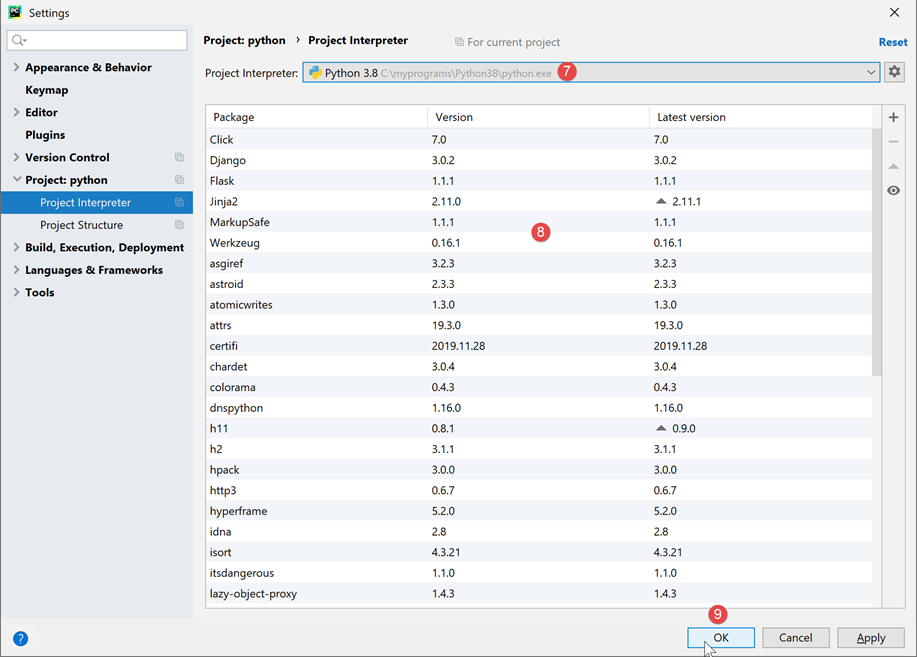
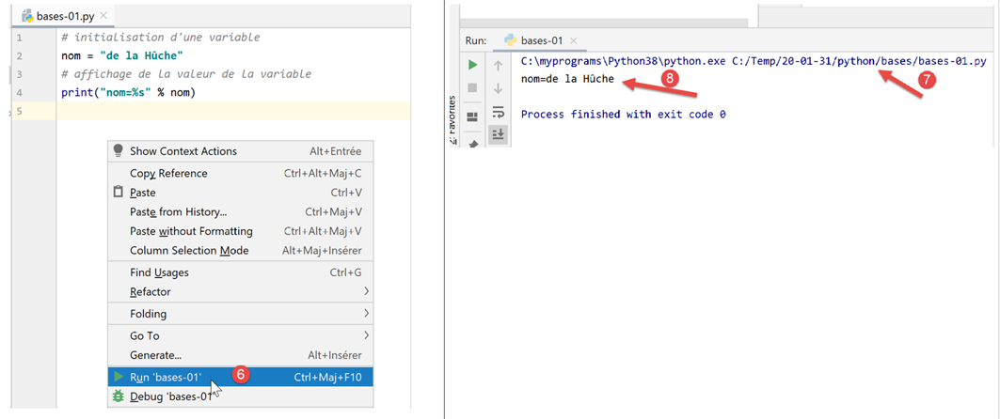
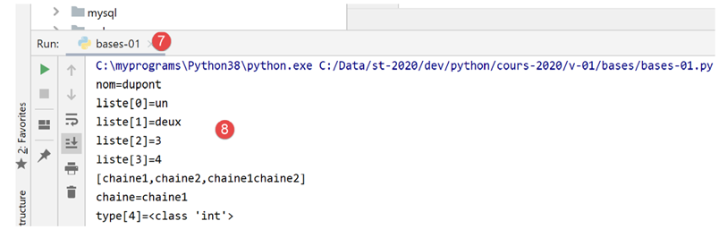
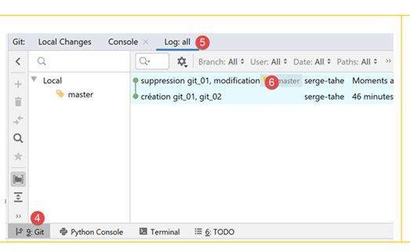
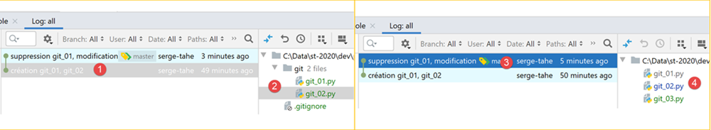
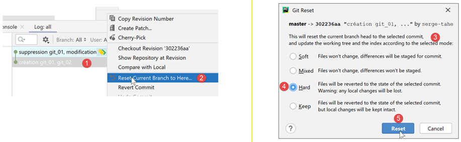
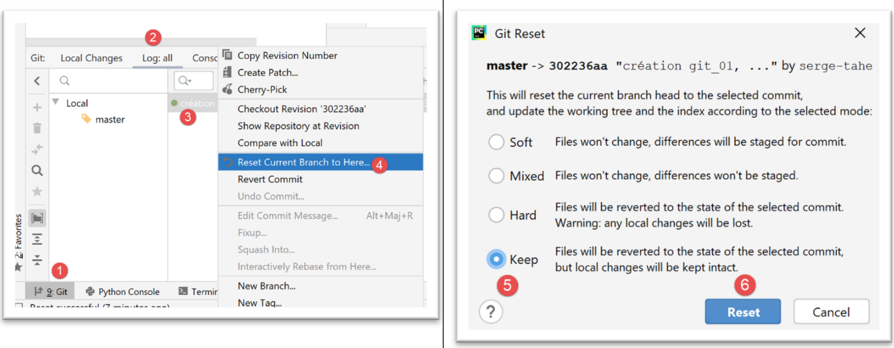
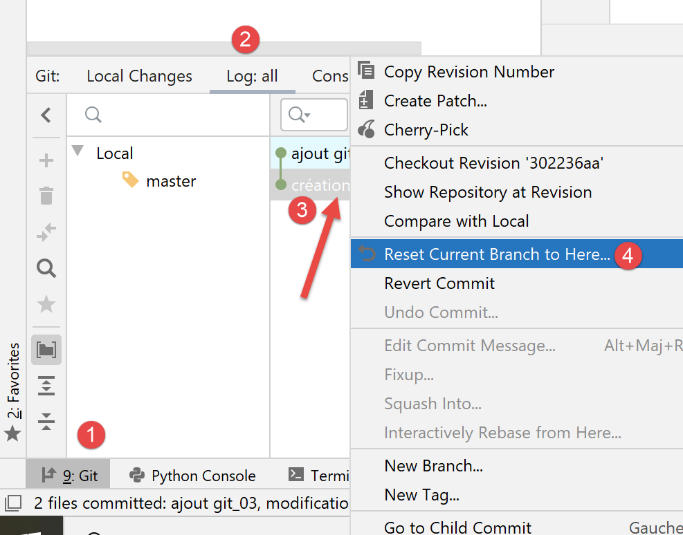

2. تثبيت بيئة العمل
2.1. بايثون 3.8.1
تم اختبار الأمثلة الواردة في هذا المستند باستخدام مترجم Python 3.8.1 المتوفر على الرابط URL |https://www.python.org/downloads/| (فبراير 2020) على جهاز يعمل بنظام Windows 10:

يؤدي تثبيت Python إلى إنشاء شجرة الملفات [1] والقائمة [2] في قائمة البرامج:

- [3-4]: مترجمان تفاعليان لـ Python؛
- [5]: وثائق Python؛
- [6]: وثائق وحدات بايثون؛
لن نستخدم مترجم بايثون التفاعلي. يكفي أن نعلم أن البرامج النصية الواردة في هذا المستند يمكن تنفيذها باستخدام هذا المترجم. وهو مفيد لاختبار عمل إحدى وظائف بايثون، لكنه غير مناسب للبرامج النصية التي يتعين إعادة استخدامها. فيما يلي مثال باستخدام الخيار [4] المذكور أعلاه:

تتيح علامة الموجه >>> إدخال أمر Python يتم تنفيذه على الفور. الكود المكتوب أعلاه له المعنى التالي:
السطور:
- 1: تهيئة متغير. في لغة Python، لا يتم تحديد نوع المتغيرات. فهي تأخذ تلقائيًا نوع القيمة التي تُعزى إليها. وقد يتغير هذا النوع بمرور الوقت؛
- 2: عرض الاسم. «nom=%s» هو تنسيق عرض حيث %s هو معلمة شكلية تشير إلى سلسلة أحرف. nom هي المعلمة الفعلية التي سيتم عرضها بدلاً من %s؛
- 3: نتيجة العرض؛
- 4: عرض نوع المتغير «name»؛
- 5: المتغير «name» هنا من النوع class. في Python 2.7، ستكون قيمته <type 'str'>؛
الآن، لنفتح وحدة تحكم Windows:

إن تمكننا من كتابة [python] بدلاً من [1]، وعثورنا على الملف القابل للتنفيذ [python.exe]، يدل على أن هذا الملف موجود في مجلد PATH على جهاز Windows. وهذا أمر مهم لأنه يعني أن أدوات تطوير Python ستتمكن من العثور على مترجم Python. ويمكن التحقق من ذلك على النحو التالي:

- في [2]، نخرج من مترجم Python؛
- في [3]، يظهر الأمر الذي يعرض PATH الخاص بالملفات التنفيذية لجهاز Windows؛
- عند [4]، نرى أن مجلد مترجم Python 3.8 جزء من PATH؛
2.2. IDE PyCharm Community
2.2.1. مقدمة
لبناء وتنفيذ البرامج النصية الواردة في هذا المستند، استخدمنا محرر [PyCharm] إصدار Community المتاح (فبراير 2020) علىhttps://www.jetbrains.com/fr-fr/pycharm/download/#section=windows| :

قم بتنزيل IDE PyCharm Community [1-3] وقم بتثبيته.
دعونا نطلق IDE PyCharm ثم ننشئ أول مشروع Python:


- في [2-4]، أنشئ مشروعًا جديدًا؛
يُظهر IDE PyCharm المشروع الذي تم إنشاؤه بالشكل التالي:

- في [2-3]، دعونا نستعرض خصائص IDE؛

- إلى [4]، وهو مترجم Python الذي سيُستخدم في المشروع؛
- في [5]، قائمة منسدلة بالمترجمات المتاحة؛
- في [6]، نختار المترجم الذي تم تنزيله في الفقرة |Python 3.8.1|؛

- في [7]، المُترجم المُختار؛
- في [8]، قائمة الحزم المتاحة مع هذا المترجم. تحتوي الحزم على وحدات نمطية يمكن أن تستخدمها نصوص Python. هناك المئات من الوحدات النمطية المتاحة؛
لنبدأ بإنشاء مجلد نضع فيه برنامجنا النصي الأول بلغة Python:

- انقر بزر الماوس الأيمن على المشروع، ثم اختر [1-2] لإنشاء مجلد؛
- في [3]، اكتب اسم المجلد: سيتم إنشاؤه داخل مجلد المشروع؛
ثم نقوم بإنشاء برنامج نصي بلغة Python:

- انقر بزر الماوس الأيمن على المجلد [bases]، ثم اختر [1-3]؛
- في [4-5]، حدد اسم البرنامج النصي؛
لنكتب البرنامج النصي الأول:

-
في ملف [3]، نكتب البرنامج النصي التالي:
- السطران 1 و3: تبدأ التعليقات بعلامة #؛
- السطر 2: تهيئة متغير. لا تحدد لغة Python نوع متغيراتها؛
- السطر 4: عرض على الشاشة. الصيغة المستخدمة هنا هي [format % données] بالشكل التالي:
- التنسيق: اسم=%s حيث تشير %s إلى موضع سلسلة أحرف. وستوجد هذه السلسلة في الجزء [données] من التعبير؛
- البيانات: ستحل قيمة المتغير [nom] محل التنسيق %s في سلسلة التنسيق؛
- باستخدام [4-5]، يتم إعادة تنسيق الكود وفقًا لتوصيات الجهة المسؤولة عن إدارة لغة Python؛
يتم تنفيذ البرنامج النصي بالنقر بزر الماوس الأيمن على الكود [6]:

- في [7]، الأمر الذي تم تنفيذه؛
- في [8]، نتيجة التنفيذ؛
لتنفيذ البرنامج النصي الخاص بالوثيقة، قم بتنزيل الكود من الرابط URL |https://tahe.developpez.com/tutoriels-cours/python-flask-2020/documents/python-flask-2020.rar| ثم في PyCharm اتبع الخطوات التالية:

- في [1-2]، افتح مشروعًا موجودًا: حدد مجلد الكود الذي تم تنزيله؛
- في [3]، المشروع المفتوح؛
- في [4-5]، تنفيذ أحد البرامج النصية للمشروع؛

- في [7-8]، نتائج التنفيذ؛
2.2.2. بيئة التنفيذ الافتراضية
أصبحت بيئة العمل لدينا جاهزة الآن. لكننا سنقوم بتعديلها لكتابة البرامج النصية الخاصة بهذا المقرر. أولاً، لنقم بتعديل إعدادات Pycharm:

في النافذة اليمنى:
- بشكل افتراضي، يتم تحديد المربع [1]. نقوم بإلغاء تحديده حتى لا يفتح Pycharm آخر مشروع تم فتحه بشكل افتراضي، بل يتيح لنا اختيار المشروع المطلوب فتحه؛
- في [2]، لا يتم تأكيد الخروج من Pycharm عند إغلاق نافذة التطبيق؛
- في [3]، يتم فتح المشاريع الجديدة في نافذة أخرى؛
- في [4]، إذا أغلقت Pycharm وكان هناك برنامج قيد التشغيل، فسيتم إيقافه؛
لنغلق الآن Pycharm ثم نعيد فتحه:

- في [1]، نقوم بإنشاء مشروع جديد؛
- في [2]، حدد مجلد المشروع؛
- في [3]، استخدم بيئة افتراضية. البيئة الافتراضية خاصة بالمشروع الذي يتم إنشاؤه. ولا تختلط مع البيئات الافتراضية للمشاريع الأخرى. يستخدم مشروع Python / Flask العديد من المكتبات الخارجية التي يجب تثبيتها. قد يستخدم مشروع P1 مكتبة B في إصدارها v1، بينما يستخدم مشروع P2 نفس المكتبة B ولكن في إصدارها v2. قد تكون هاتان النسختان متوافقتين إلى حد ما أو غير متوافقتين. ولكن عند تثبيت مكتبة في إصدارها v2 في حين أن الإصدار v1 مثبت بالفعل، يتم استبدال الإصدار v1 بالإصدار v2. وقد يشكل هذا مشكلة للمشروع الذي كان يستخدم الإصدار v1 إذا لم يكن الإصدار الجديد v2 متوافقًا تمامًا مع الإصدار v1. لتجنب هذه المشاكل، يتم عزل كل مشروع في بيئة افتراضية؛
- في [4]، حدد المجلد الذي سيتم تخزين مكتبات Python فيه والتي سيتم تنزيلها خلال المشروع. وقد اخترنا هنا مجلدًا باسم [venv] (البيئة الافتراضية) داخل مجلد المشروع. وليس هناك ما يوجب القيام بذلك؛
- في [5]، محول بايثون الخاص بالمشروع. وهو المحول الذي قمنا بتثبيته في الخطوة السابقة؛
- في [6]، قم بإنشاء المشروع؛

- في [7-8]، المشروع الذي تم إنشاؤه؛
- في [9]، بيئة تشغيل المشروع، والتي تُسمى البيئة الافتراضية؛
- في [10]، المجلد [site-packages] هو المجلد الذي سيتم تخزين المكتبات التي سيتم تنزيلها لاحقًا فيه؛
2.2.3. Git
بعد ذلك، يتم تفعيل برنامج للتحكم في شفرة المصدر. وسيكون هنا Git [1-4]:

يتيح برنامج التحكم في الكود المصدري (VCS: نظام التحكم في الإصدارات) تتبع تطورات المشروع. يمكن التقاط «لقطات» للمشروع في مراحل مختلفة من تطوره، من خلال عملية تُسمى «الالتزام» (commit). إذا تم إجراء عمليتي التزام في الوقت T والوقت T+1، فإن VCS يتيح معرفة التغييرات التي طرأت بين النسختين اللتين تم الالتزام بهما. عادةً ما يستخدم نظام VCS من قبل فريق من المطورين. يقوم هؤلاء بإجراء عمليات «commit» لشفرتهم البرمجية بعد اختبارها بشكل صحيح. ومن خلال نظام VCS، يمكن للمطورين الآخرين استرداد هذه الشفرة التي تمت المصادقة عليها واستخدامها.
في هذه الحالة، لا يوجد سوى مطور واحد. وتُظهر التجربة أنه من الممكن أن يكون هناك تطبيق يعمل في الوقت T ولا يعمل بعد ذلك في الوقت T+1. لذا، قد نرغب في العودة إلى الوراء إلى الوقت T للبدء من الصفر. يتيح VCS ذلك، ولهذا السبب سنستخدمه هنا.
نوضح كيفية القيام بذلك باستخدام Git.

- في [1]، حدد علامة التبويب [Git] (أسفل اليسار)؛
- في [2]، نلاحظ أن هناك 495 ملفًا في المشروع لم يتم إصدارها بواسطة Git. وهذا يعني أنها لن تكون جزءًا من نسخة المشروع عند إجراء عمليات الالتزام (commit)؛
- في [3]، زر [commit] أو زر المصادقة على المشروع. وكما ذكرنا سابقًا، يقوم Git عندئذٍ بالتقاط لقطة للمشروع وتخزينها في مجلد [.git] في جذر المشروع (لا يعرضه Pycharm ولكنه مرئي في مستكشف Windows)؛
لنقوم بالتحقق من صحة المشروع [3] في حالته الحالية.
- في [4]، قائمة الملفات غير الخاضعة للإصدار؛
- في [5]، جميع هذه الملفات غير الخاضعة للتحكم في الإصدار هي ملفات البيئة الافتراضية [venv]؛
- في [6]، يجب أن يكون كل «كوميت» مصحوبًا برسالة. يذكر المطور هنا التعديلات التي أدخلتها النسخة التي سيتم «كوميت»ها مقارنةً بآخر نسخة تم «كوميت»ها؛
قد يتجاهل Git بعض المجلدات أو الملفات. وبالتالي، فإنها لا تدخل أبدًا في «صورة» Git. في [5] أعلاه، انقر بزر الماوس الأيمن على المجلد [venv].
- في [1-3]، نحدد أن المجلد [venv] يجب ألا يكون جزءًا من «الصورة» في Git. تُوضع قائمة المجلدات والملفات التي يتجاهلها Git في ملف يُسمى [.gitignore] [4]؛


- بعد العملية السابقة، تختفي جميع الملفات الموجودة في المجلد [venv] من قائمة الملفات غير الخاضعة للتحكم في الإصدارات. ولم يتبق سوى الملف [.gitignore] الذي تم إنشاؤه للتو؛
- في [5]، نختاره ليتم حفظه؛
- في [6]، نقوم بإنشاء رسالة التثبيت:
- في [7]، نقوم بالتأكيد. عندها يتم التقاط صورة للمشروع؛

- في ملف [8-9]، محتوى ملف [.gitignore]: سطر واحد يحتوي على اسم المجلد [/venv]، مما يشير إلى أنه يجب تجاهل محتواه في الصور؛
لنوضح الآن كيف يمكن أن يفيدنا Git. أولاً، نقوم بإنشاء مجلد [git] (يمكنك استخدام أي اسم آخر – حيث يمكن حذفه في نهاية العرض التوضيحي):

- في [1-5]، نقوم بإنشاء مجلد باسم [git]؛

- في [6-10]، نقوم بإنشاء برنامج نصي Python باسم [git_01]؛

- في [11-12]، لا يحتوي البرنامج النصي إلا على تعليق واحد؛
- في [13-14]، نقوم بإنشاء نسخة من [git_01]. للقيام بذلك، حدد [git_01] واضغط على Ctrl-C (نسخ) ثم (Ctrl-V) (لصق) وحدد [git_02] كاسم للملف؛

الآن، لنقوم بتسجيل التغييرات في مشروعنا. سيتم التقاط صورة تضم الملفين [git_01, git_02]؛

- في [1-3]، نقوم بإجراء الكوميت للمشروع؛
- في [4]، نختار الملفات غير المُدرجة في الإصدار التي نريد إرسالها، وهي جميعها في هذه الحالة؛
- في [5]، نكتب الرسالة التي تحدد عملية الإرسال؛
- في [6]، يتم التأكيد؛

- في [1-2]، يتم تأكيد عملية الإرسال؛
- في [3]، نختار علامة التبويب [Log]؛
- في [4]، عرض لفروع المشروع. هنا، فرع واحد يسمى [master]؛
- في [5-6]، عملية التسجيل التي تم إجراؤها للتو؛
الآن، لنقم بنفس الطريقة بإنشاء سكريبت [git_03]:

لنقم بتعديل البرنامج النصي [git_02] وحذف البرنامج النصي [git_01]:

ثم نقوم بتسجيل الإصدار الجديد:

الآن لدينا عمليتا تسجيل في السجلات:

عند تحديد عملية إرسال معينة، تظهر على يمينها شجرة ملفات المشروع:

لنفترض الآن أن عملية التسجيل الأخيرة قد أوصلتنا إلى طريق مسدود، ونرغب في العودة إلى حالة تتوافق مع إحدى عمليات التسجيل السابقة:

- في [1-2]، نختار الالتزام الذي نريد العودة إلى حالته؛
- في [3-5]، توجد عدة أوضاع لإعادة الضبط. نختار الوضع [hard] الذي يعيدنا إلى الحالة المحددة مع فقدان التغييرات التي تم إجراؤها منذ ذلك الحين؛

- في [6]، تم استعادة [git_01] الذي تم حذفه؛
- في [7-8]، نجد [git_02] في حالته الأصلية دون التعديل الذي تم إجراؤه؛
الآن، دعونا نعدل [git_02] ونضيف [git_03] و[1-4]:

الآن، لنكرر عملية العودة إلى الالتزام الأولي:

- إلى [1-4]، نعود إلى الصورة الموجودة في الالتزام رقم 1؛
- في [5-6]، نختار الخيار [Keep] بدلاً من [Hard]. هذه الخيارات ليست سهلة الفهم. لذا يجب تجربتها:
 |  |
- في [1]، لا يزال الملف [git_03] موجودًا؛
- في [2-3]، احتفظ الملف [git_02] بتعديلاته؛
من الصعب تحديد ما فعله ملف [Revert Commit]. والآن، دعونا نسجل الحالة الحالية:

- في [1-6]، عملية التسجيل؛

- في [9]، نرى الالتزام الجديد؛
الآن، دعونا نحاول العودة إلى الالتزام 1 كما تم بالفعل:
 |  |
- في [1-6]، نعود إلى الالتزام رقم 1 في الوضع [Hard]؛

- في [7-8]، فقدنا هذه المرة بالفعل جميع التعديلات التي تم إجراؤها منذ الالتزام الأول؛
فيما يلي، لن نعود مرة أخرى إلى [Git]. يمكن للقارئ العمل بالطريقة التالية:
- يمكنه اتباع الأمثلة المقدمة إما عن طريق كتابتها بنفسه، أو عن طريق تنزيلها من موقع الدورة التدريبية؛
- في كل مرة يعمل فيها أحد الأمثلة، يمكنه إجراء «كوميت» لمشروعه؛
- عندما يطور القواعد البرمجية الخاصة به ويواجه مأزقًا، فإنه يعلم أنه يمكنه العودة إلى حالة مستقرة، وذلك بالرجوع إلى «كوميت» سابق؛
2.3. قواعد كتابة كود Python
يمكن كتابة كود بايثون دون الالتزام بقواعد الكتابة، ولن يمنع ذلك الكود من العمل. ولكن قد لا يحظى ذلك بتقدير مجتمع بايثون الذي وضع قواعد الكتابة هذه. وقد تم تلخيص هذه القواعد في منشور على الرابط |https://stackoverflow.com/questions/159720/what-is-the-naming-convention-in-python-for-variable-and-function-names|:

- يتبع اسم الوحدة النمطية (module_name) قاعدة تسمى أحيانًا [snake_case]: جميع الأحرف صغيرة وقد تحتوي على كلمات مفصولة بعلامة التسطير. تنطبق هذه القاعدة [snake_case] على أسماء الطرق والحزم والمتغيرات والدوال؛
- يتبع اسم الفئة (ClassName) قاعدة تسمى أحيانًا [PascalCase]: سلسلة من الكلمات غير المنفصلة مع كتابة الحرف الأول من كل كلمة بحرف كبير؛
- تتبع أسماء الثوابت قاعدة التسمية [SNAKE_CASE]: وهي عبارة عن سلسلة من الكلمات المكتوبة بأحرف كبيرة ومفصولة بعلامة التسطير؛
وقد تم اتباع هذه القواعد بشكل عام في هذا المستند. ومع ذلك، بالنسبة للوحدات النمطية التي تُعرِّف فئةً ما، فقد أطلقتُ على الوحدة النمطية نفس اسم الفئة التي تحتوي عليها. وبالتالي فهي تتبع القاعدة [PascalCase] بدلاً من [snake_case]. فقد أردتُ أن أتمكن من تحديد الوحدات النمطية الخاصة بالفئات بسرعة.